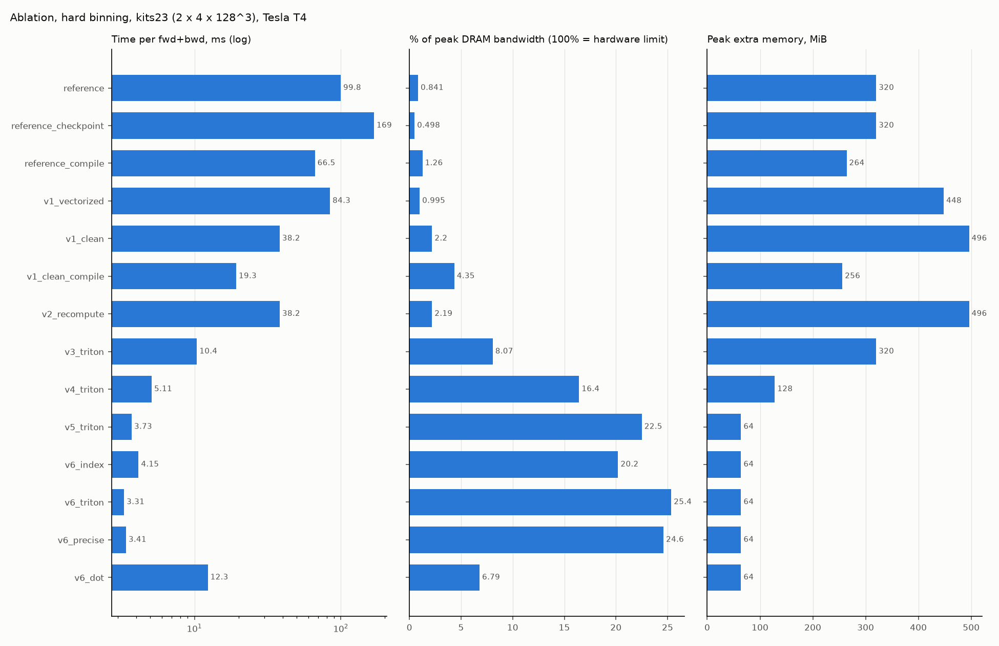

Sprints: all
Study guide: making the mL1-ACE loss fast on the GPU
This guide teaches the whole project: the loss, why the original implementation is slow, every optimization step (sprints 1-11), how each step is proven correct and measured, and the tooling around it. Every code block on these pages is cut from the repository at build time, and every table is read from a saved benchmark run, so what you read is what the code does.
Result in one line. Our implementation computes the same loss and gradients as the original, 29-75x faster and with 5-14x less peak memory on a Tesla T4 (paper training shapes), and is a drop-in replacement:
from ace_kernels.module import HardL1ACELoss, SoftL1ACELoss.
How to use this guide
Read the pages in order; each one follows the same pattern:
- Concept: the idea in plain words.
- Code: the real implementation, with the lines that matter pointed out.
- Worked example: small numbers computed by actually running the code.
- Try it: commands for your Mac (tests, CPU runs). Copy button on the right.
- Evidence: the plot or table from a GPU run that proves the claim.
- Self-check: questions with hidden answers. Answer before you open them.
GPU numbers come from Kaggle Tesla T4 runs stored in results/kaggle/<commit>-<job>/;
you do not need a GPU to study them. Rebuild this guide any time:
$ uv run python -m ace_bench.figures && uv run python -m ace_bench.studywrites docs/study/*.html; then open docs/study/index.html
Map of the repository
Five parts, each with one job:
| part | job | read first |
|---|---|---|
src/ace_reference/ |
the upstream loss, frozen: the ground truth | hardl1ace.py |
src/ace_kernels/ core |
options, shared semantics, the math in PyTorch | config.py, binning.py |
src/ace_kernels/impls/ |
the optimization ladder, one change per entry | page 3-5 |
src/ace_kernels/kernels/ |
Triton GPU kernels | page 4-5 |
src/ace_bench/ + tests/ |
measuring and proving | page 2, 7 |
Every implementation is registered under a name and called the same way, which is what makes the ladder comparable step by step:
78def ace_loss(
79 input: torch.Tensor,
80 target: torch.Tensor,
81 config: ACEConfig | None = None,
82 impl: str = "reference",
83) -> torch.Tensor:
84 """Compute the mL1-ACE loss with the chosen implementation.
85
86 Args:
87 input: logits or probabilities, shape ``[B, C, *spatial]``.
88 target: one-hot ``[B, C, *spatial]``, or labels ``[B, 1, *spatial]``
89 when ``config.to_onehot_y`` is set.
90 config: loss options; defaults to ``ACEConfig()``.
91 impl: registered implementation name.
92 """
The one entry point. Every implementation (reference, v1 ... v6) has the same signature: logits (or probabilities), target, config. Tests, benchmarks and the training harness only change the impl string.
93 config = config if config is not None else ACEConfig()
ACEConfig holds every option of the upstream loss (bins, binning, activation, background, empty classes, weights, reduction, right, empty weight), validated once.
94 spec = get_impl(impl)
95 if not spec.supports(config.binning, input.device.type):
96 raise ValueError(
97 f"{impl!r} does not support binning={config.binning!r} "
98 f"on device={input.device.type!r}"
99 )
100 return spec.fn(input, target, config)
Look the name up in the registry (filled by @register(...) decorators when ace_kernels.impls is imported) and refuse unsupported combinations (e.g. a Triton implementation on the CPU) with a clear error.
The deliverable and its data flow
The user-facing class only translates the upstream constructor into an ACEConfig
and picks the implementation for the device:
90 def resolve_impl(self, device: torch.device) -> str:
91 """Implementation used for inputs on ``device``."""
92 if self.impl != "auto":
93 return self.impl
94 return FAST_CUDA if device.type == "cuda" and HAS_TRITON else FAST_OTHER
"auto": Triton on CUDA, the handwritten-backward PyTorch version elsewhere (CPU, Mac).
The ladder at a glance
Each row is one registry entry = one change, measured on the same GPU and input (kits23 shape: 2 volumes x 4 classes x 128^3, forward + backward):
| impl | ms | % peak BW | peak MiB | kernels | run |
|---|---|---|---|---|---|
| reference | 99.8 | 0.8 | 320.0 | 428 | 20261027T151515Z-sprint11-precise |
| reference_checkpoint | 168.6 | 0.5 | 320.0 | 675 | 20261025T195519Z-baseline-paper |
| reference_compile | 66.5 | 1.3 | 264.0 | 171 | 20261026T203820Z-sprint8-paper |
| v1_vectorized | 84.3 | 1 | 448.0 | 78 | 20261025T221628Z-sprint3-paper |
| v1_clean | 38.2 | 2.2 | 496.0 | 67 | 20261026T145009Z-sprint4-paper |
| v1_clean_compile | 19.3 | 4.3 | 256.0 | 13 | 20261026T203820Z-sprint8-paper |
| v2_recompute | 38.2 | 2.2 | 496.0 | 82 | 20261026T170611Z-sprint56-paper |
| v3_triton | 10.4 | 8.1 | 320.0 | 63 | 20261026T170611Z-sprint56-paper |
| v4_triton | 5.11 | 16.4 | 128.0 | 59 | 20261026T203820Z-sprint8-paper |
| v5_triton | 3.73 | 22.5 | 64 | 55 | 20261027T151515Z-sprint11-precise |
| v6_index | 4.15 | 20.2 | 64 | 55 | 20261027T141609Z-sprint11-paper |
| v6_triton | 3.31 | 25.4 | 64 | 7 | 20261027T151515Z-sprint11-precise |
| v6_precise | 3.41 | 24.6 | 64 | 7 | 20261027T151515Z-sprint11-precise |
| v6_dot | 12.3 | 6.8 | 64 | 55 | 20261027T141609Z-sprint11-paper |
| v2_grad_in_fwd | 46.7 | 1.8 | 496.0 | 94 | 20261026T145009Z-sprint4-paper |
docs/ablation/ablation.md). Caveat: v6_index and v6_dot come from the Sprint 11 paper run, where the first shape (kits23) ran ~1.3x slow for every Triton version; on the other shapes v6_index is 1.05-1.15x faster than v5_triton. docs/ablation/ablation_rows.parquet
Proves: each step's gain is attributable to one change (one registry entry each).
Sessions
| page | sprints | you will understand |
|---|---|---|
| 1. The loss | S1-S2 | the formula, hard vs soft binning, memory-bound, atomic contention |
| 2. Correctness | S1, S9 | how "identical to the original" is proven, tolerances, float64 truth |
| 3. PyTorch | S3-S4 | vectorizing, deriving the backward by hand, recompute vs store |
| 4. Triton | S5-S8 | GPU kernels: privatized histograms, fused backward, fused softmax |
| 5. Sprint 11 | S11 | launch overhead, O(1) bin index, packaging, failed experiments |
| 6. Training | S8, S11 | the loss inside training, Amdahl, torch.compile vs our kernels |
| 7. Tooling | all | benchmark harness, Kaggle CLI, W&B, profiler, git tags |
| Evidence | all | every claim and the test / plot that proves it |
| Glossary | all | the terms |